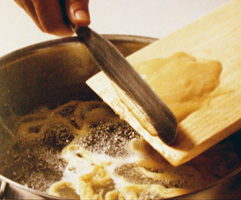

Chnöpfli
5,5 von 6(Für 3 Personen) 1/8 Liter Milch mit 3 Eiern gut verruehren. Erst 250 gr Mehl, dann 50 gr Griess unterruehren. 1 Gutsch Essig, sowie Salz und Muskat beigeben. Der Teig muss zaehflüssig sein. 1 Std. zugedeckt ruhen lassen. Salzwasser mit etwas Essig kochen. Den Chnoepfliteig durch ein Lochsieb portionsweise hineindruecken. Sobald die Chnoepfli an der Oberflaeche schwimmen, sind sie fertig. Abtropfen und mit Butter, Salz und Pfeffer abschmecken. Dieser Teig eignet sich auch für Spaetzle, die vom Brett (siehe Bild) geschabt werden.
